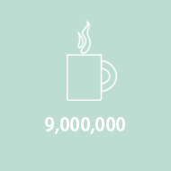

قرعهکشی ماهیانه چای گلستان
قرعهکشی ماهیانه چای گلستان - 1402
هر یک از مصرفکنندگان محصولات چای گلستان میتوانند با ارسال کد قرعه کشی روی بسته به شماره 30007405 در قرعه کشیهای ماهیانه ما شرکت کنند. نگهداری از بستهبندی محصول برای اهدای جایزه ضروری است.
اطلاعات بیشتر
معرفی گلستان
آنچه که امروز با نام مجموعه گلستان میشناسیم در سال 1329 بنیان نهاده شد. زمانی که شرکت گلستان فعالیت خود را با بستهبندی و توزیع چای پاکتی آغاز کرد. با گذر زمان و رشد اقتصاد کشور، نهال «گلستان» به تدریج تقویت شد و شاخ و برگ گرفت. فعالیتهای «گلستان» با تهیه، تولید و بستهبندی بهترین محصولات غذایی گسترش پیدا کرد. گلستان پس از سال ها تلاش، همچنان می کوشد تا به کمک تجربیات اندوخته شده در این سال ها کالاهایی قابل اعتماد و با کیفیت تولید نماید
هدفمندی و برنامه ریزی موثر، ایمان و عزم راسخ برای دستیابی به اهداف تعیین شده، به کار گیری همکاران مجرب و دلسوز، استفاده از روش های نوین بازاریابی و مشتری محوری از جمله عوامل مهم در استراتژی شرکت گلستان می باشد.
محصولات گلستان
نام تجاری گلستان قدمتی به اندازه عمر شرکت گلستان دارد. گلستان ممتاز ترین محصولات خود را با این نام تجاری عرضه می کند . مصرف کنندگان محصولات گلستان همواره از این نام تجاری خاطره محصولاتی ممتاز و منحصر بفرد دارند و با اطمینان از نهایت کیفیت از این نام تجاری حمایت می کنند .

سرمایه انسانی

مراكز فروش

محصولات گلستان

مشتریان گلستان